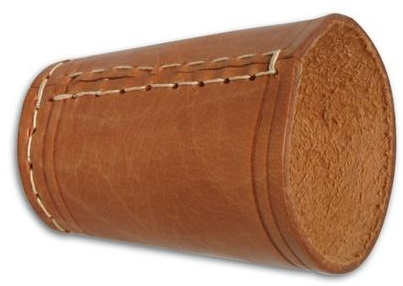

Würfel werden zur Generierung von Zufallszahlen in Brett- oder Glücksspielen genutzt. Der traditionelle Würfel liefert Zahlen zwischen 1 und 6. Würfel verschiedener Zahlenbereiche werden mit untschiedlichen geometrischen Formen verwirklicht, z.B. Pyramiden.
Auf dieser Seite können durch einen Zufallszahlengenerator ein oder mehrere Würfel mit beliebig vielen Seiten geworfen werden. Dazu wird in das Feld unter "Würfelanzahl" die Anzahl der gewünschten Würfel und in das Feld "Seitenzahl" die gewünschte Seitenzahl eingetragen. Der "Würfeln"-Knopf erzeugt die Summe aus allen erwürfelten Zufallszahlen und stellt die einzelnen Zahlen unter der Summe dar.
- Der Generator ist geometrisch nicht begrenzt, d.h. es kann z.B ein 43-seitiger Würfel simuliert werden.
- Eine negative Zahl wird als ihr positives Gegenstück ausgewertet.
- Aus der Null und jeglichen Buchstabenkombinationen können keine Zufallszahlen erzeugt werden.
- Es können maximal 50 einzelne Würfe dargestellt, aber Zufallssummen aus mehr als 50 Würfen generiert werden.
3